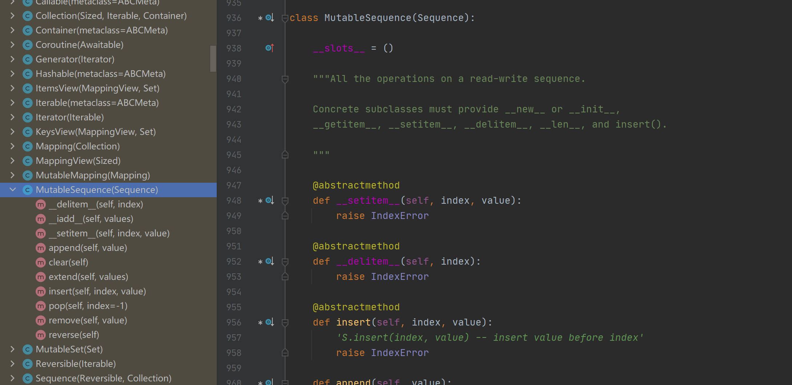
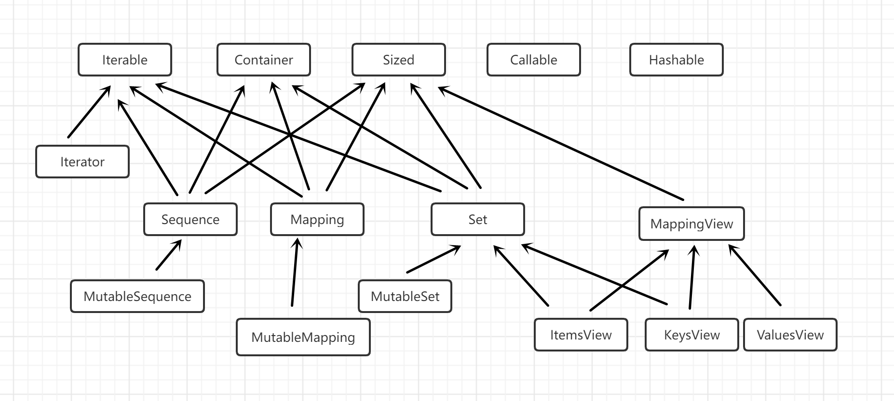

我们写 Python 基本不需要自己创建抽象基类，而是通过鸭子类型来解决大部分问题。《流畅的 Python》作者使用了 15 年 Python，但只在项目中创建过一个抽象基类。我们更多时候是创建现有抽象基类的子类，或者使用现有的抽象基类注册。本文的意义在于，了解抽象基类的定义与使用，可以帮助我们理解抽象基类是如何实现的，为我们以后学习后端语言（比如 Java、Golang）打下基础。毕竟抽象基类是编程语言通用设计。
定义抽象基类的子类
先回顾下什么是抽象基类：Python 的抽象基类是指必须让继承它的子类去实现它所要求的抽象方法的类。如下代码定义了抽象基类 collections.MutableSequence 的子类：
import collections
Card = collections.namedtuple('Card', ['rank', 'suit'])
class FrenchDeck2(collections.MutableSequence):
ranks = [str(n) for n in range(2, 11)] + list('JQKA')
suits = 'spades diamonds clubs hearts'.split()
def __init__(self):
self._cards = [Card(rank, suit) for suit in self.suits
for rank in self.ranks]
def __len__(self):
return len(self._cards)
def __getitem__(self, position):
return self._cards[position]
def __setitem__(self, position, value): # <1>
self._cards[position] = value
def __delitem__(self, position): # <2>
del self._cards[position]
def insert(self, position, value): # <3>
self._cards.insert(position, value)
通过抽象基类 collections.MutableSequence 源码：

可以发现，它有三个抽象方法__setitem__、__delitem__、insert，所以 FrenchDeck2 类必须实现它们。而对于其他非抽象方法比如append、extend、pop等，则可以直接继承无需实现。
注意，Python 只会在运行时实例化 FrenchDeck2 类时真正检查抽象方法的实现，如果未实现会抛出 TypeError 异常，提示 Can’t instantiate abstract class 之类的。
标准库中的抽象基类
为了知道哪些抽象基类可以使用，我们可以看看标准库。
collections.abc
collections.abc 的抽象基类如下图所示：

Iterable、Container、Sized
这三个抽象基类是最基础的类，各个集合都继承了这三个抽象基类。
- Itearble 通过
__iter__方法支持迭代 - Container 通过
__contains__方法支持 in 运算符 - Sized 通过
__len__方法支持 len()函数
Sequence、Mapping、Set
不可变集合类型，各自都有可变的子类。
MappingView
.items()、.keys()、.values()返回的对象分别是 ItemsView、KeysView 和 ValuesView 的实例。
Callable、Hashable
为内置函数 isinstance 提供支持，判断对象能不能调用或散列。
Iterator
迭代器。
numbers
numbers 的抽象基类有以下几种：
- Number
- Complex
- Real
- Rational
- Integral
这叫做数字塔，顶部是超类，底部是子类。比如使用isinstance(x, numbers.Integral)检查一个数是不是整数，这样代码就能接受 int、bool（int 的子类），再比如使用isinstance(x, numbers.Real)检查浮点数，这样代码就能接受 bool、int、float、fractions.Fraction。
定义抽象基类
**本小结可以跳过。**不过了解抽象基类的定义有助于阅读标准库和其他包中的抽象基类源码。
抽象基类的示例代码如下：
## BEGIN TOMBOLA_ABC
import abc
class Tombola(abc.ABC): # <1>
@abc.abstractmethod
def load(self, iterable): # <2>
"""Add items from an iterable."""
@abc.abstractmethod
def pick(self): # <3>
"""Remove item at random, returning it.
This method should raise `LookupError` when the instance is empty.
"""
def loaded(self): # <4>
"""Return `True` if there's at least 1 item, `False` otherwise."""
return bool(self.inspect()) # <5>
def inspect(self):
"""Return a sorted tuple with the items currently inside."""
items = []
while True: # <6>
try:
items.append(self.pick())
except LookupError:
break
self.load(items) # <7>
return tuple(sorted(items))
## END TOMBOLA_ABC
要点：
- 继承 abc.ABC
- 使用
@abc.abstractmethod装饰器标记抽象方法 - 抽象基类也可以包含普通方法
- 抽象基类的子类必须覆盖抽象方法（普通方法可以不覆盖），可以使用 super()函数调用抽象方法，为它添加功能，而不是从头开始实现
再看白鹅类型
白鹅类型的定义有一点难以理解，如果理解了虚拟子类，就能加快理解白鹅类型。虚拟子类并不是抽象基类的真正子类，而是注册到抽象基类上的子类，这样 Python 就不会做强制检查了。
注册的方式有两种：
register 方法
Python3.3 以前只能使用 register 方法，比如 collections.abc 模块的源码中，把内置类型 tuple、str、range 和 memoryview 注册为 Sequence 的虚拟子类：
Sequence.register(tuple)
Sequence.register(str)
Sequence.register(range)
Sequence.register(memoryview)
register 装饰器
把 TomboList 注册为 Tombola 的虚拟子类：
@Tombola.register
class TomboList(list):
...
白鹅类型和鸭子类型是 Python 的动态特性，它们的共同点是，只要长的像，Python 就不会做强制检查，鸭子类型是针对普通类的子类而言的，白鹅类型是针对抽象基类的虚拟子类而言的。
参考资料：
《流畅的 Python》第 11 章 接口：从协议到抽象基类